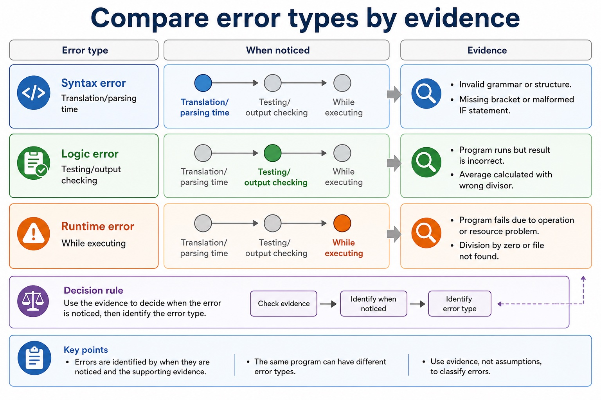
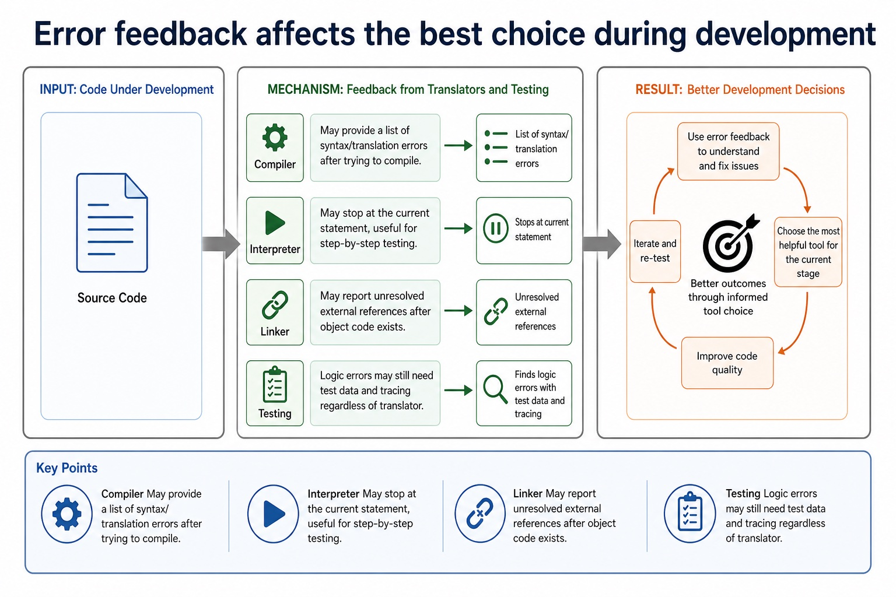
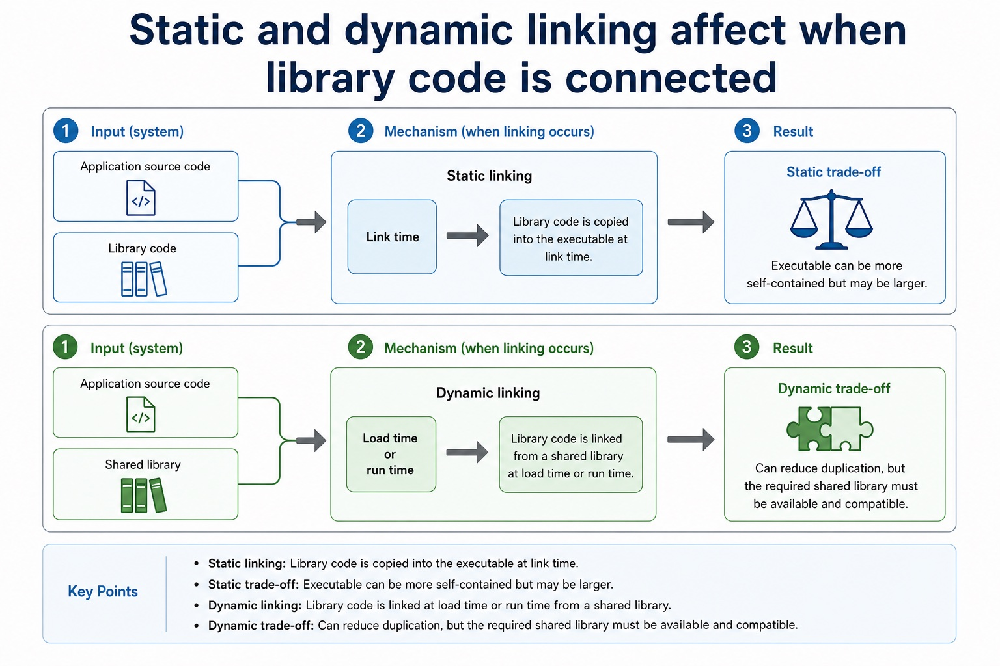
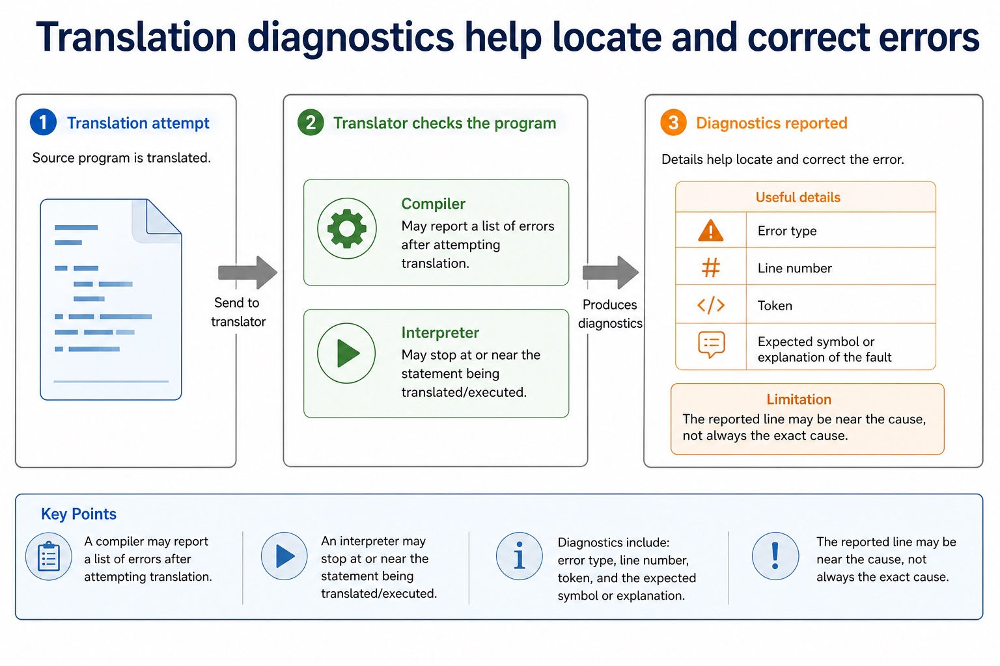
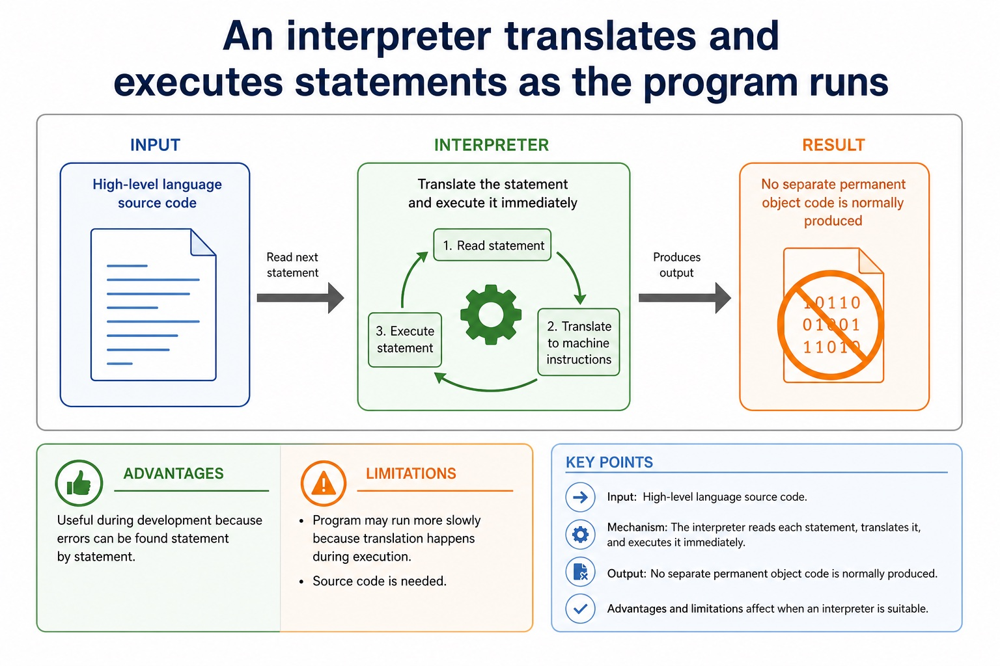

Cambridge AS9618 | Paper 1 | Section 5: System software
IDE features and practical debugging support
Flexible-depth lesson
S5.07 | Learn from the diagrams, test the method, then choose the practice you need.
Choose a Quick, Full or Deep route
Quick route
Use the diagnostic, learning objectives, first worked example and foundation question. Stop once the learner can explain the central distinction accurately.
Full route
Use every knowledge-point material set, the worked method, the terminology check and all questions.
Deep route
Add the prerequisite refresher, ask learners to connect the concept checklist, discuss the labelled extension and complete a transfer question without a model answer.
Part 1 | optional depth
Prerequisite knowledge and quick diagnostic
Recall S5.04 before starting this lesson.
Give one accurate definition or method step before continuing. If it is missing, revisit only that prerequisite.
Open optional prerequisite refresher
An assembler translates assembly language, a compiler translates high-level language, and an interpreter translates and executes high-level language.
Explain why assembler, compiler and interpreter are needed.
Part 2 | knowledge-point material sets
Learn each point through visuals
Follow the map, the three-part explanation and the concrete cue. Open precise wording only after the idea is clear.
Open the concept checklist and choose what to teach
PartsFor debugging, an IDE can provide single stepping, breakpoints, inspection of variables and expressions, and a report window for diagnostic or output information
ConnectionsIn the IDE, a breakpoint pauses before the faulty loop, single stepping advances one statement at a time, the variable/expression view exposes Index, and the report…
Purposeand debugging with single stepping, breakpoints, variables, expressions and a report window
S5.07 diagrams
1 / 5
01
Comparison · 1 of 5
Compare error types by evidence

Open text transcript
Error type
When noticed
Evidence
Translation/parsing time
Invalid grammar or structure.
Missing bracket or malformed IF statement.
Testing/output checking
Program runs but result is incorrect.
02
Concrete example · 2 of 5
Error feedback affects the best choice during development

Open text transcript
Compiler May provide a list of syntax/translation errors after trying to compile.
Interpreter May stop at the current statement, useful for step-by-step testing.
Linker May report unresolved external references after object code exists.
Testing Logic errors may still need test data and tracing regardless of translator.
03
Diagram · 3 of 5
A compiler translates the whole high-level program before execution
Open text transcript
Input High-level language source code.
Output Object code or executable code after translation.
Advantages Executable can run without source code; repeated execution may be faster after compilation.
Limitations Errors are often reported after compilation, so debugging may involve checking a list of errors.
04
Concrete example · 4 of 5
Static and dynamic linking affect when library code is connected

Open text transcript
Static linking Library code is copied into the executable at link time.
Static trade-off Executable can be more self-contained but may be larger.
Dynamic linking Library code is linked at load time or run time from a shared library.
Dynamic trade-off Can reduce duplication, but the required shared library must be available and compatible.
05
Diagram · 5 of 5
Translation diagnostics help locate and correct errors

Open text transcript
Compiler May report a list of errors after attempting translation.
Interpreter May stop at or near the statement being translated/executed.
Useful details Error type, line number, token, expected symbol or explanation of the fault.
Limitation The reported line may be near the cause, not always the exact cause.
Open precise syllabus wording
Understand IDE features: context-sensitive prompts, dynamic syntax checking, prettyprint, expand/collapse, single-step, breakpoints, variable/expression inspection and report window.
IDE evidence must cover coding prompts; dynamic syntax error detection; prettyprint and expand/collapse presentation; and debugging with single stepping, breakpoints, variables, expressions and a report window.
Supporting diagram library
1 / 4
01
Diagram · 1 of 4
An assembler translates assembly language into machine code
Open text transcript
An assembler translates assembly-language mnemonics into machine code or an object-code module.
Machine code uses the instruction set and binary encodings of the target processor.
An object module may still need a linker to combine modules and resolve external library references before an executable can be produced.
An assembler does not translate high-level languages such as Java or Cambridge pseudocode.
02
Diagram · 2 of 4
Comparison: same goal, different route
Open text transcript
A compiler translates a whole high-level program before execution and produces target or object code; a linked executable can run repeatedly without the source.
An interpreter translates and executes high-level statements during execution and normally produces no separate permanent object-code file.
An assembler translates assembly-language mnemonics into target machine code or an object module for a specific processor instruction set.
If an assembler or compiler produces object modules, a linker may still be required before there is an executable program.
Choose the translator from the input language and the development or deployment need; do not claim that every assembler output is immediately executable.
03
Diagram · 3 of 4
Translator software converts program code into another form
Open text transcript
A compiler translates high-level source into target machine or object code.
An assembler translates assembly mnemonics into target machine or object code.
A linker combines object modules and resolves references to form an executable.
A loader places executable code and data into memory; it is not a generic object-to-machine translation stage.
04
Diagram · 4 of 4
An interpreter translates and executes statements as the program runs

Open text transcript
Input High-level language source code.
Output No separate permanent object code is normally produced.
Advantages Useful during development because errors can be found statement by statement.
Limitations Program may run more slowly because translation happens during execution; source code is needed.
Apply the idea
Worked method
01Trace Java and locate a loop fault
02First the Java compiler produces bytecode; the JVM then interprets the bytecode or JIT-compiles parts for the host.
03In the IDE, a breakpoint pauses before the faulty loop, single stepping advances one statement at a time, the variable/expression view exposes Index, and the report window records diagnostics.
04Dynamic syntax checking can flag malformed syntax but not a syntactically valid wrong boundary.
Open precise terminology and exam facts
IDE evidence must cover coding prompts; dynamic syntax error detection; prettyprint and expand/collapse presentation; and debugging with single stepping, breakpoints, variables, expressions and a report window.
For coding, an IDE can provide context-sensitive prompts. For initial error detection it can perform dynamic syntax checks. For presentation it can prettyprint code and expand or collapse code blocks. These features help create and navigate source code but do not prove that its algorithm is correct.
For debugging, an IDE can provide single stepping, breakpoints, inspection of variables and expressions, and a report window for diagnostic or output information. Single stepping executes one statement at a time; a breakpoint pauses at a chosen point; variable/expression inspection exposes changing values.
The expand/collapse feature hides or reveals a code block in the editor without changing program execution.
Beyond syllabus / 延伸知识（不要求背诵）
production build systems automate translation, linking, testing and packaging, while the syllabus examines the purpose of each stage separately.
Part 3 | select by learner need
Practice by question type
identifyrecallfoundation2 marks
Question 1. Identify the two required presentation features.
Show answer and marking guidance
Answer: Prettyprint and expand/collapse code blocks.
Marking guidance: Award one mark for each distinct, technically accurate point or method step.
Common error: For the command word identify, perform that exact action; do not replace it with an unrelated fact.
applyrecallapplication2 marks
Question 2. Which IDE feature pauses at a chosen line, and which advances one statement?
Show answer and marking guidance
Answer: A breakpoint pauses; single stepping advances one statement at a time.
Marking guidance: Award one mark for each distinct, technically accurate point or method step.
Common error: Do not repeat the same point in different words; each mark needs a separate idea or method step.
explainexplaintransfer3 marks
Question 3. Explain how ide features and practical debugging support would be applied in a suitable computing context.
Show answer and marking guidance
Answer: For coding, an IDE can provide context-sensitive prompts. For initial error detection it can perform dynamic syntax checks. For presentation it can prettyprint code and expand or collapse code blocks. These features help create and navigate source code but do not prove that its algorithm is correct. For debugging, an IDE can provide single stepping, breakpoints, inspection of variables and expressions, and a report window for diagnostic or output information. Single stepping executes one statement at a time; a breakpoint pauses at a chosen point; variable/expression inspection exposes changing values. The expand/collapse feature hides or reveals a code block in the editor without changing program execution.
Marking guidance: Each mark needs a relevant point linked to the stated context.
Common error: Do not copy the worked example unchanged; transfer the method and check it against the new context.
Related past-paper indexes
Reference
Marks
Command word
Question type
9618/12/S/24 Q8(b)
6
complete
debug
9618/12/W/24 Q4(a)
4
describe
debug
9618/12/W/24 Q4(b)
3
describe
debug
9618/12/S/23 Q7(c)
4
complete
recall
Index only: Cambridge question and mark-scheme wording is not reproduced on this public course page.
Part 4 | close when ready
Summary and exam reminders
Summary
Define ide features and practical debugging support with the exact technical vocabulary expected by the syllabus.
Use the lesson method on a fresh context and show the intermediate decision, representation or calculation.
Match the shape of the answer to the command word and the available marks.
Check the final answer against the scenario instead of repeating a memorised sentence.
Common error to correct
Students often say interpreters are 'bad compilers'. Correction: they are different translation approaches with different use cases.
Exam technique
Follow the command word: state gives a fact; explain links a cause to a consequence; compare covers both sides.
Match the number of independent points or method steps to the available marks.
For ide features and practical debugging support, use the exact technical term before applying it to the scenario.